Each write-up below covers what we wanted to find out, how we tested it, what we found, and what changed in the design because of it. Some tests didn't go the way we hoped, and those are here too. The full report has the complete data, and there are more photos on the photos page.
Testing
Tests on this page
- Traffic simulator Done
- Magnetic simulation of a car Done
- Detection algorithm Done
- Vehicle pass test Done
- Antenna simulation Done
- Battery life and burst voltage Done
- Stereo camera field test Done
- Works-like prototype In progress
- BMS bench tests Planned
Traffic simulator
What we wanted to know: whether the arrival math and our switching rules, working together, shorten side-street waits without adding delay on the main road.
How we tested it: we won't build the cabinet computer for this course, so the test ran on a simulator that uses the same arrival math and rules the computer would. It's a Monte Carlo test: it generates random traffic, runs the same cars through two controllers (our rules and a model of how the signal runs today), and repeats that many times. Because both controllers see identical traffic, any difference in delay comes from the rules.
| Test | Data | Result |
|---|---|---|
| Arrival math check | Every Kipling car in every run | 100% of cars arrived inside their predicted window (92% if drivers change speed more than expected) |
| Full weekday | CDOT data for Kipling & W 39th Ave, Wed. Nov. 4, 2026: 46,319 vehicles in 24 hours [4] | Today's timing beat our rules in all 24 hours. Side-street delay went from 23.9 to 31.7 vehicle-hours a day. Kipling stops dropped 9%. |
| The hour we observed | Our video of Kipling & Stanford, Aug. 31, 10–11 PM: 323 Kipling cars, 11 side-street cars | Average side-street wait down 23%, from 46.3 to 35.8 s. Median from 35 to 27.4 s. About 2 of 322 Kipling cars stopped. |

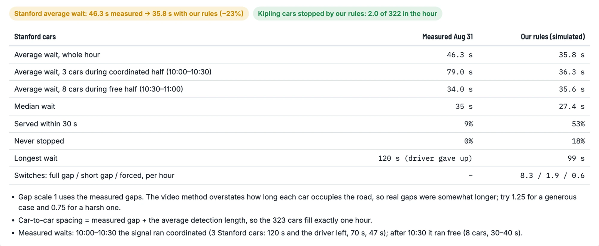

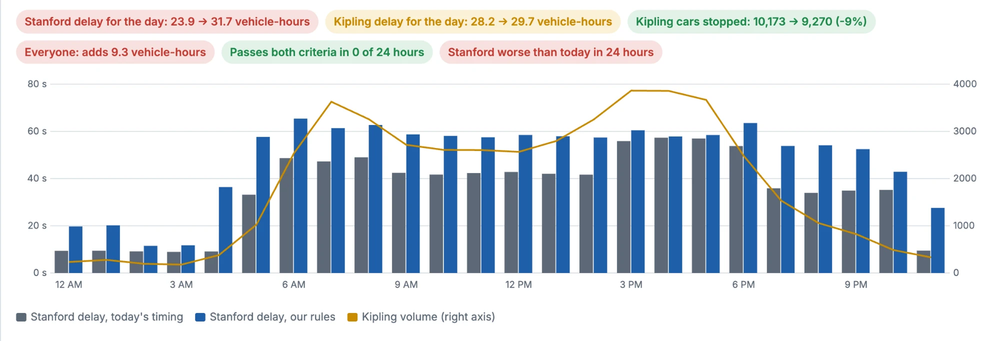
What it showed: the math works. The computer always knew when Kipling cars were coming. The rules don't work yet on busy roads: they wait for a 17.5-second gap with no cars in either direction, which rarely comes on a road as busy as Kipling, so most side-street cars ended up waiting for the 60 or 90-second fallback. Where traffic arrives in waves with real gaps between them, like the hour we observed, the rules helped.
What's next: the City of Lakewood has been asked for hourly volumes and timing at real intersections, so we can retune the rules and use the simulator to decide when off-peak mode should turn on and off. We'll also test an intersection of two main roads.
Magnetic simulation of a car
What we wanted to know: how big a signal a passing car makes at a sensor 50 mm under the road, and how far to either side of the puck a car can be and still be seen.
How we tested it: a 4.5 m sedan (steel floor pan, cast-iron engine block, two steel axles, 150 mm ground clearance) was modeled in Ansys Maxwell 3D, with Earth's field set to the real values for our site. The car was moved along the lane in 0.25 m steps (57 positions) and across the lane in 0.5 m steps (231 positions).

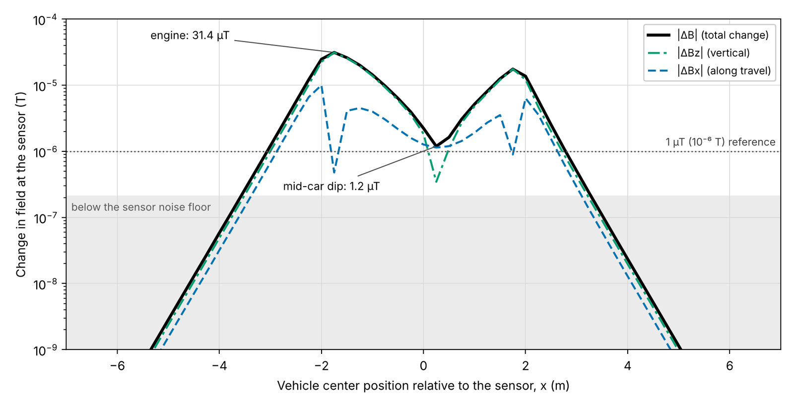

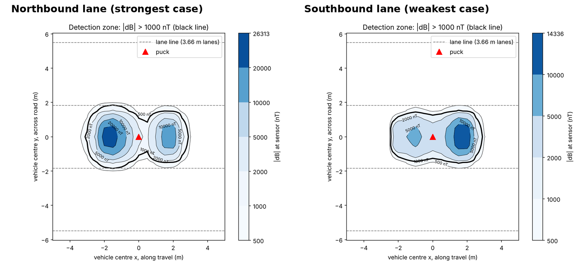
What it showed: a centered car changes the field by about 31 µT at the sensor. But with the middle of the car directly over the puck, the change drops to about 1.2 µT, close to the threshold. A car stopped in a queue in that spot could look like an empty lane if the puck judged it from a single reading.
What changed: the detection rule now follows a car from the moment it arrives until the field settles, and a stopped car holds the puck in an "occupied" state instead of being detected again.
Detection algorithm
What we wanted to know: whether the puck counts each car exactly once.
How we tested it: the simulated car signals were run through two detection algorithms with realistic sensor noise added, at 5, 20, 45, and 65 mph, in both directions, at 0–1.5 m from the puck, with 400 random trials for each case.
- Algorithm A (the original plan): a reading over the threshold starts a fixed half-second burst of fast readings, then the puck goes back to waiting.
- Algorithm B (revised): the burst keeps going until the field has stayed below half the threshold for a quarter second.
| Result | Algorithm A | Algorithm B |
|---|---|---|
| Cars counted more than once, 5 mph | about 100% | 0% |
| Cars counted more than once, 20 mph | up to 81% | 0% |
| Detected, within 1.0 m of the puck, all speeds | 100% | 100% |
| Detected, 1.5 m off the puck at 65 mph | 45–79% | 45–73% |
| False triggers from noise alone | 0 a day | 0 a day |

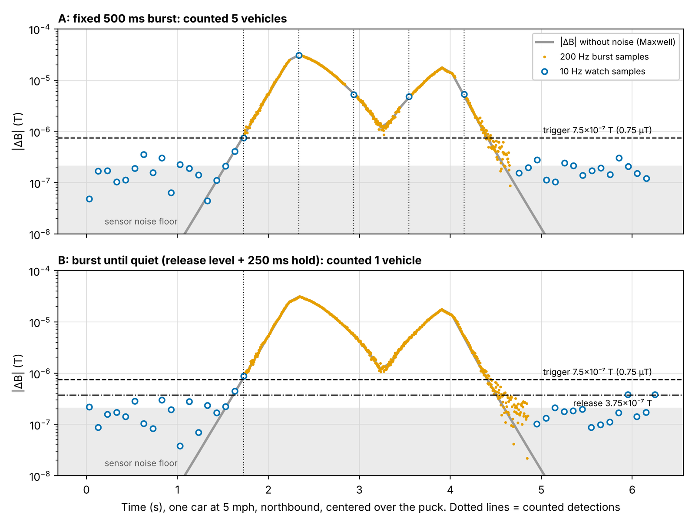
What it showed: the fixed burst ends before a slow car has passed, so the next reading counts it again. Algorithm B removes the double counts with no loss in detection, so it's the design going forward. The threshold was set at 0.75 µT: lower, and noise alone triggers about 500 times a day; higher, and a car at the edge of the zone can flicker across it and be counted twice.
Vehicle pass test
What we wanted to know: whether real vehicles match the magnetic simulation, which leaves out each vehicle's own permanent magnetism.
How we tested it: the same magnetometer the puck uses, on a breakout board in a 3D-printed pad, was taped to the pavement and logged at 200 readings a second, the same settings as the puck. Two vehicles drove over it at about 5 mph: a 2023 Kia Sportage Hybrid on electric power, and a lifted 2021 Toyota Tacoma. Each made five passes centered over the sensor, five shifted 1 m to the side, and five in the next lane over, 3.66 m away.

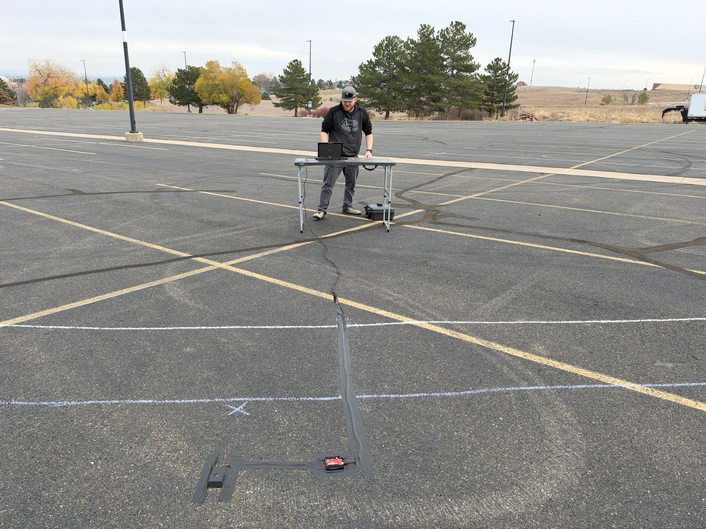

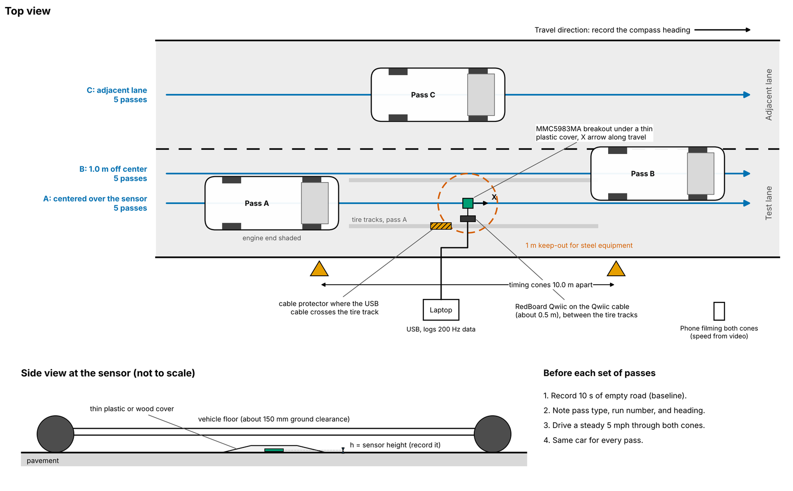
| Pass | Kia | Tacoma | Simulation |
|---|---|---|---|
| Centered | 56.7–61.2 µT | 22.1–24.5 µT | 31.4 µT |
| Shifted 1 m | 57.6–58.8 µT | 22.1–23.8 µT | 11.4 µT |
| Next lane | 3.5–4.2 µT | 1.6–2.0 µT | under 0.01 µT |
| In-lane passes counted once | 10 of 10 | 10 of 10 | |
| Next-lane passes falsely detected | 4 of 4 | 5 of 5 |

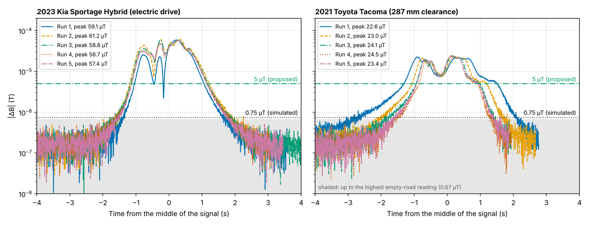

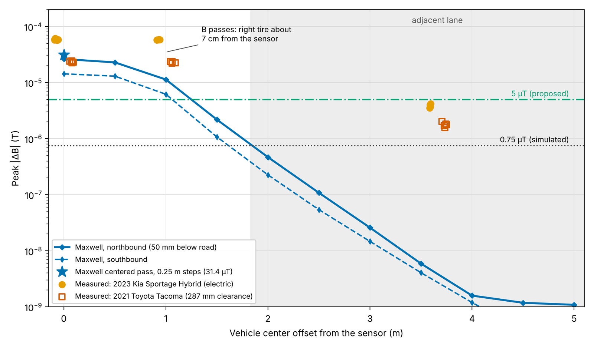
What it showed: all 29 passes logged cleanly, and every vehicle had its own repeatable signature. Algorithm B counted every in-lane pass exactly once. The surprise was the next lane: the simulation predicted almost nothing there, but real vehicles changed the field by 1.6–4.2 µT, enough to trigger the puck every time. That's the vehicles' own permanent magnetism, which the model leaves out.
What changed: sweeping the threshold over all 29 passes showed that anything from 4.25 to 16.5 µT counts every in-lane pass once and rejects every next-lane pass. Allowing for the real puck sitting deeper in the road narrows that to about 4.25–9 µT, so the threshold was raised to about 5 µT. Going higher would also shrink the detection zone. The cabinet computer also adds a check: when pucks in neighboring lanes see a vehicle at the same moment, it keeps the stronger one.
Antenna simulation
What we wanted to know: whether a flat patch antenna under the puck's plastic lid can cover the 915 MHz band it needs.
How we tested it: the patch was modeled in Ansys HFSS inside the actual housing, tuned to 915 MHz by trimming its length and moving its feed point, then re-tuned on three board thicknesses.
| Result (target: 20 MHz bandwidth) | 1.6 mm board | 3.2 mm board | 6.4 mm board |
|---|---|---|---|
| Bandwidth | 17.3 MHz | 24.3 MHz | 40.0 MHz |
| Power actually radiated | 32% | 50% | 69% |
| Peak gain | 1.1 dBi | 3.1 dBi | 4.4 dBi |

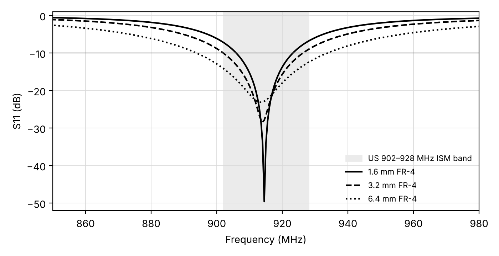

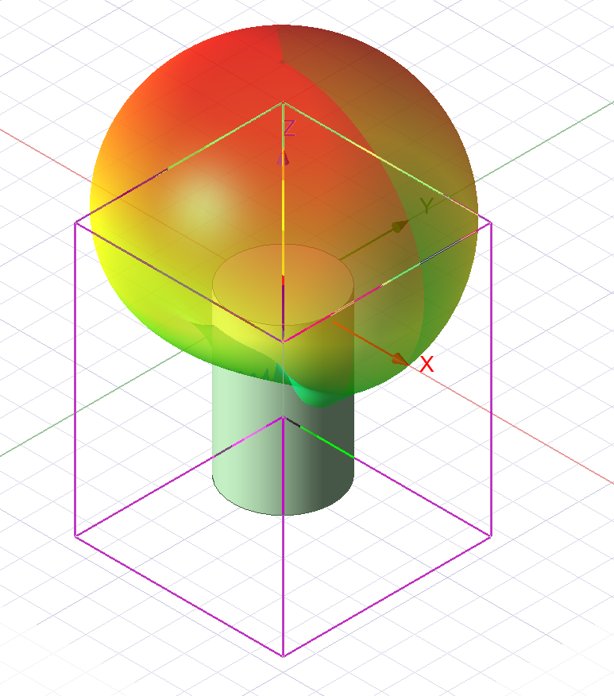
What it showed: the standard 1.6 mm board misses the target and turns two-thirds of its power into heat. The 3.2 mm board meets it, adds 2 dB, and is a standard thickness most board houses offer, so it's the design going forward. The bigger finding is the shape: a patch radiates mostly straight up, but the intersection radio is low on the horizon, where the gain is about 8 dB below peak. That horizon number is the one that matters for range.
What changed: pucks get installed with the feed axis across the lane, which points the stronger side along the road and is worth about 2 dB. Next is a run with asphalt around the housing, and a link budget using the horizon gain.
Battery life and burst voltage
What we wanted to know: whether four D cells really last 10 years, and whether the supply holds up when the radio transmits on cold, nearly empty cells.
How we tested it: analysis from the cell and radio datasheets, using the puck's measured current budget, with the cells' capacity derated 15% for cold.
| Requirement | Target | Result |
|---|---|---|
| Service life | 10 years, 20% kept in reserve | 20.2 years at the normal load; 10.4 years relaying the entire time |
| Supply during a transmit burst | Keep the 3.0 V rail up | 3.29 V lowest, on cold cells near end of life |
| Peak burst current | Under 400 mA per cell | About 13 mA per cell, roughly 30× margin |
| BMS standby draw | About 2 µA | About 1.9 µA |
| Magnetic offset from the cells | Well under the 5 µT threshold | About 0.25 µT, removed by the empty-road baseline |

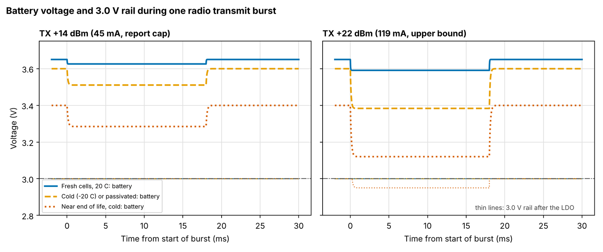
What changed: lithium-thionyl chloride cells build up a resistive layer while they sit in storage, which can make the first bursts sag. Each puck now runs a short burst sequence on the bench before it's sealed, and logs the supply while it does, to check the actual cells.
Stereo camera field test
What we wanted to know: which lens and camera spacing give accurate range and speed from 25 to 150 m. The cameras are the most variable part of the sensor head: focal length, spacing, frame rate, and exposure all change the quality of the data.
How we tested it: two Sony A7 IV cameras on tripods stood in for the IMX390 pair, about 1.05 m apart, synced with a clap and a flash. A car drove a known stretch of road at 25 and 35 mph, approaching and departing, with targets from 25 to 150 m. Five setups changed the focal length or the spacing. The clips were then cut down in software to imitate lower frame rates and resolutions, and run through a prototype stereo program.

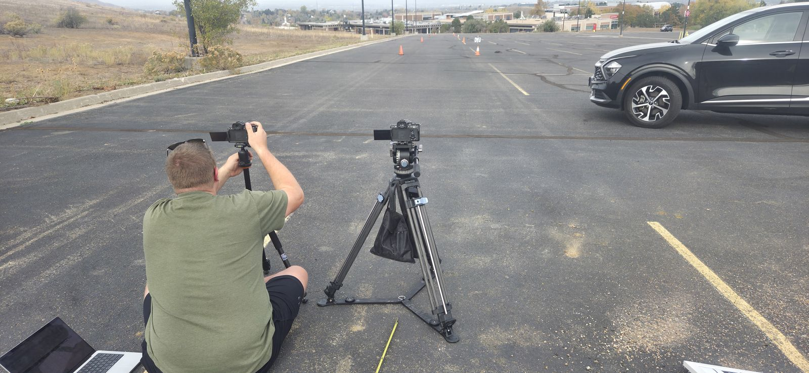

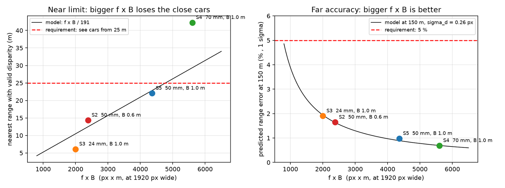
What it showed: on the stand-in cameras, a 50 mm focal length was the best fit. 70 mm was the most accurate overall but couldn't see cars accurately at 25 m, the closest the design needs. Frame rate turned out not to be the limit on speed error, so a 30 fps camera was chosen as the balance between cost and error.
What was selected: a 12 mm lens on each of the final design's IMX390 cameras. It measures range from 20.9 m out to 150 m, which covers the full 25–150 m zone, with 2.81 m of error at 150 m, about 1.9% of the distance.

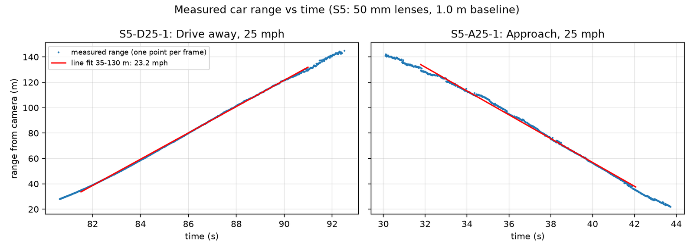

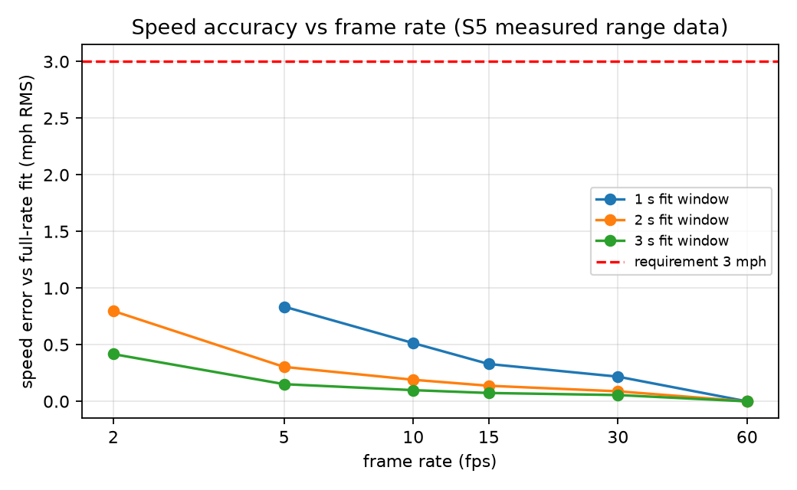
Works-like prototype
What we want to show: the whole idea working in one piece. A car passes over two pucks, the pucks tell the control computer it's coming, the computer predicts when it will reach the light, and the light changes for it.
How it works: a single scale-model lane with two magnetometers along it, standing in for two pucks. A model car carrying a bit of steel rolls over both. The time between the two detections gives the car's speed, the same way the real computer gets it from a pair of pucks, and from that the computer predicts when the car will reach the stop line. A traffic signal built from LEDs changes in time for it.
The point is to demonstrate the sequence: detect, predict, change the light. Matching real-world vehicle timing is secondary for this prototype, since a model car on a short track won't move like a car on Kipling.
So far: the detection code the pucks will run (Algorithm B) has already passed desktop tests with simulated passes and realistic noise. It counted every pass exactly once and had no false triggers in 30 minutes of noise alone.
Photo of the works-like prototype
BMS bench tests
These tests check the battery management circuit on the bench, using a power supply and an electronic load in place of the real lithium cells, so no cell is put at risk during a fault test.
| Test | How | Pass if |
|---|---|---|
| Voltage monitoring | Compare the microcontroller's readings against a multimeter | Readings stay within the chosen tolerance |
| Low-voltage warning | Lower the simulated battery voltage step by step | The warning trips at the set threshold |
| Overcurrent protection | Raise the load with a current-limited supply | Protection acts before any part's limit |
| Temperature monitoring | Compare the temperature sensor with a reference thermometer, especially in the cold | Readings stay within datasheet accuracy |
| Power use | Measure current in standby and active modes | The BMS stays inside its power budget |